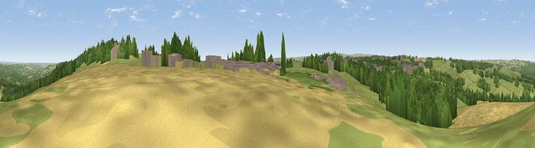

Viewpoint near Leadgate
#12900 in England · top 26% of its area beats it · near Leadgate · access?Where it is
The exact computed spot (NZ 13625 52425). Click the marker for map links.
Public access: no public right of way or access land is recorded at this exact spot — it may be on private land. Computed from Natural England's CRoW access layer and OpenStreetMap rights of way — not the legal definitive map. Always verify locally.
The view, rendered

A 360° render of this exact spot computed from the terrain model, tree cover and land cover — summer colours, afternoon light, calibrated against photographs of famous viewpoints. Real trees, hedges and buildings will differ in detail.
The panorama
Grey silhouette: terrain skyline in each direction (720 bearings, Earth curvature and refraction included). Dashed green: skyline with trees (+15 m) and buildings (+8 m) as obstacles. Blue strip: how far the ground is visible on each bearing.
Where the view opens
Wedge length = distance to the farthest visible ground on that bearing (vegetation-aware). Rings at 10, 25 and 50 km.
What fills the view
47% grassland · 32% woodland · 15% cropland · 6% built-up
Angular shares of the visible panorama (visual magnitude), not map area. Landscape diversity 0.52 (0–1 Shannon).
Key numbers
More beautiful places nearby
The staircase of upgrades: each row has a higher view potential than everything closer. Driving times are estimates from straight-line distance, calibrated against real road routing — check an actual route before setting out.
| Place | Direction | Drive | Score |
|---|---|---|---|
| Pontop Pike | ENE · 1 km | ~4 min | 77.8 |
| Viewpoint near Rothbury | N · 47 km | ~68 min | 81.1 |
| Dove Crag | NNW · 47 km | ~68 min | 82.3 |
| Viewpoint near Lazenby | SE · 55 km | ~77 min | 86.4 |
| Warsett Hill | ESE · 64 km | ~86 min | 86.8 |
| Viewpoint near Easington | ESE · 69 km | ~92 min | 90.2 |
| The Knoll | S · 468 km | ~434 min | 91.0 |
54.86642, -1.78924 · source: screening · position refined by local search. Computed location — check access rights before visiting.